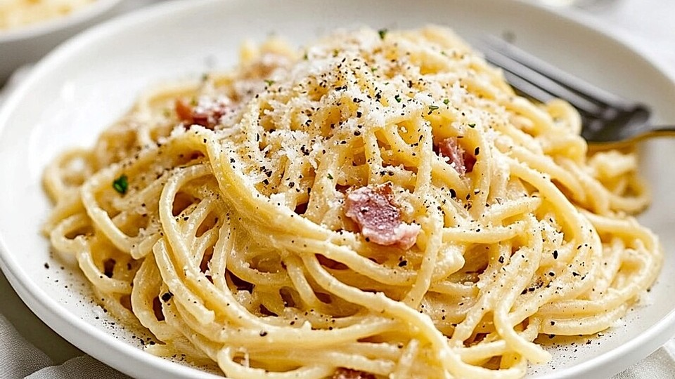

Spaghetti Carbonara

Spaghetti Carbonara is a traditional Roman pasta dish made with eggs, cheese, pancetta, and pepper. It's rich, creamy (without cream!), and incredibly satisfying.
Carbonara is known for its simple ingredients and bold flavor. Cooked pasta is tossed with a sauce made from eggs and cheese, which gently cooks with the heat of the pasta. Crispy pancetta or guanciale adds a salty, savory depth, while freshly ground black pepper gives it a spicy finish.
The key is timing—mixing everything quickly while the pasta is hot, so the eggs form a silky sauce rather than scrambling. No cream is needed, just a perfect balance of cheese, fat, and heat. Serve immediately for the best texture and flavor.
Ingredients
For the dish:
- Spaghetti – 400g (14 oz)
- Pancetta or guanciale – 150g (5 oz), diced
- Eggs – 4 large (2 whole eggs, 2 yolks)
- Grated Pecorino Romano – 1 cup (about 100g)
- Freshly ground black pepper – 1 teaspoon (or to taste)
- Salt – for pasta water
Steps
- Bring a large pot of salted water to a boil and cook the spaghetti until al dente. Reserve about 1 cup of pasta water before draining.
- In a skillet over medium heat, cook pancetta or guanciale until crisp. Remove from heat and set aside.
- In a bowl, whisk together the eggs, egg yolks, grated Pecorino Romano, and black pepper until smooth.
- Immediately after draining the pasta, return it to the pot or a large mixing bowl while still hot.
- Add the cooked pancetta and mix well.
- Quickly pour in the egg and cheese mixture, tossing vigorously to coat the pasta and create a creamy sauce. Add a little reserved pasta water as needed to adjust the consistency.
- Serve immediately with extra cheese and black pepper on top.
Home